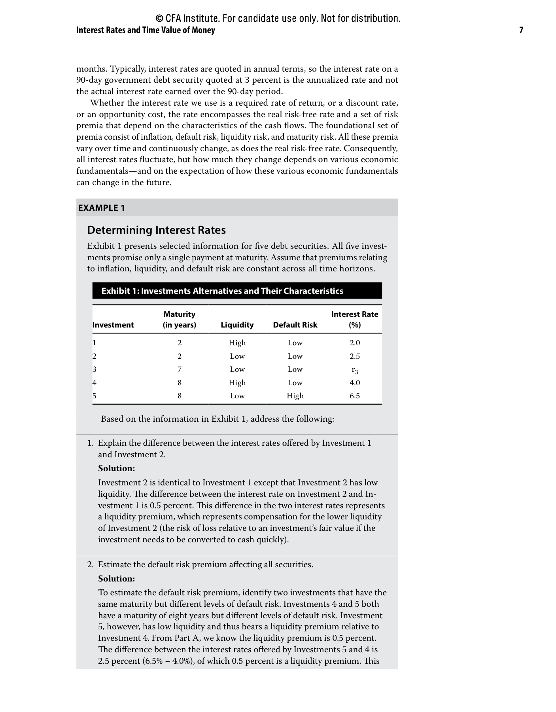
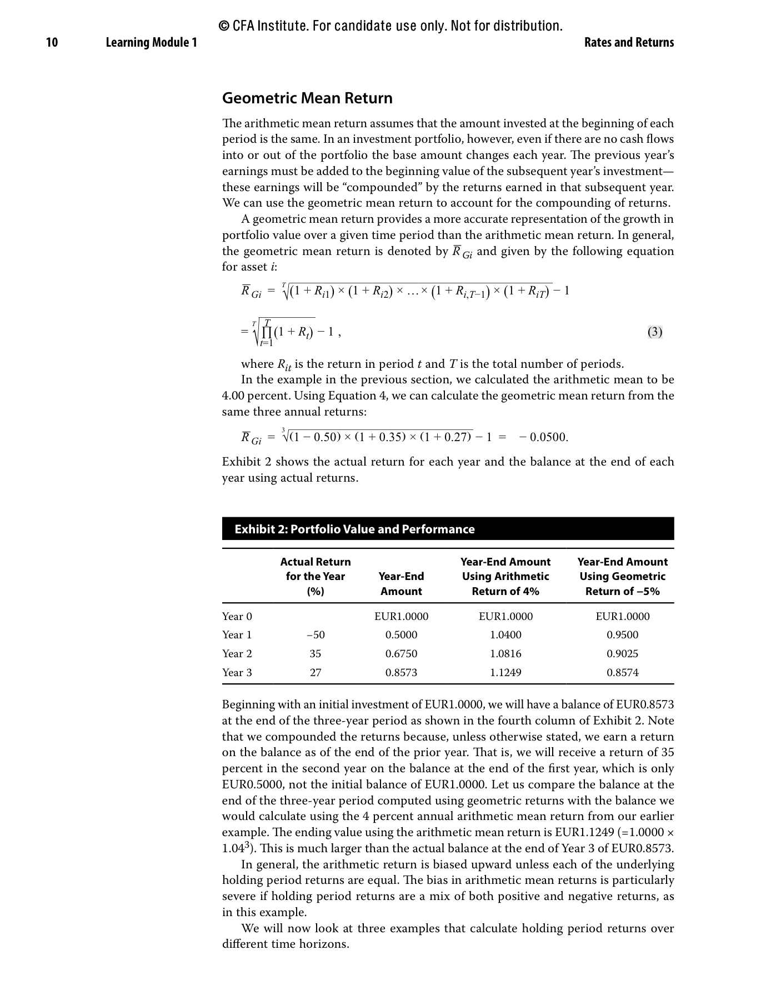
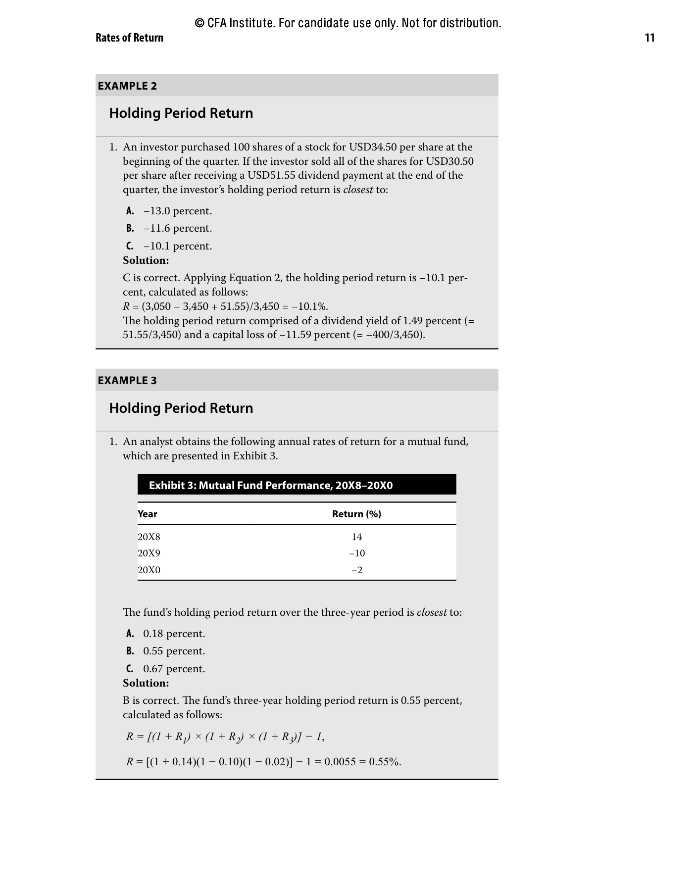
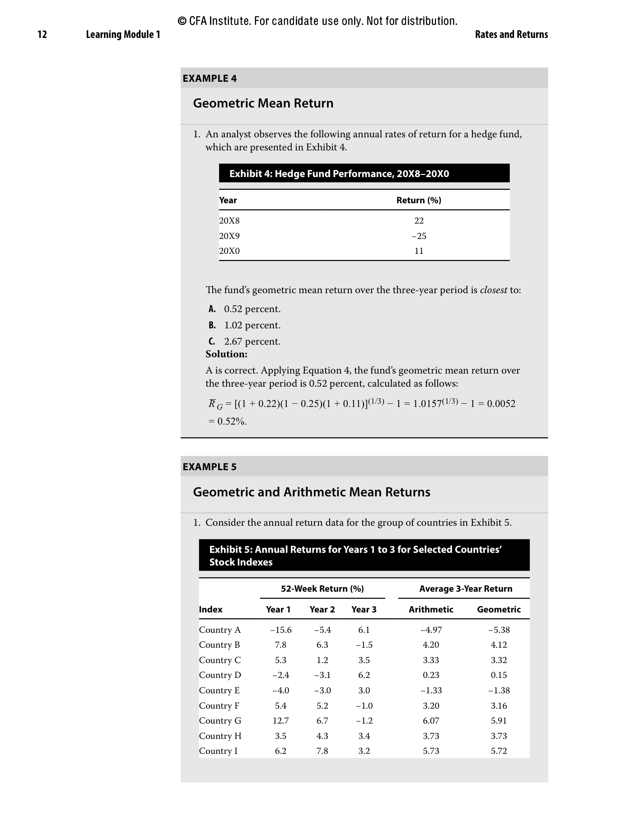
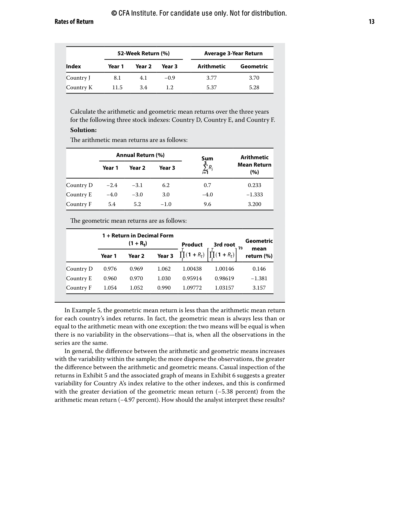
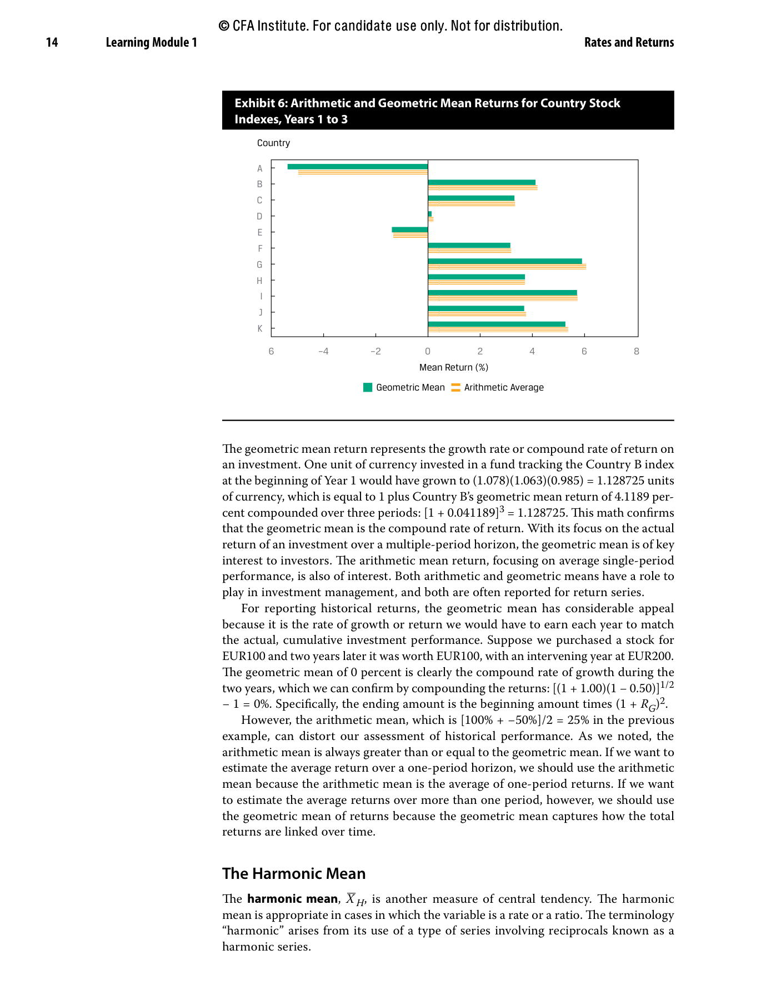
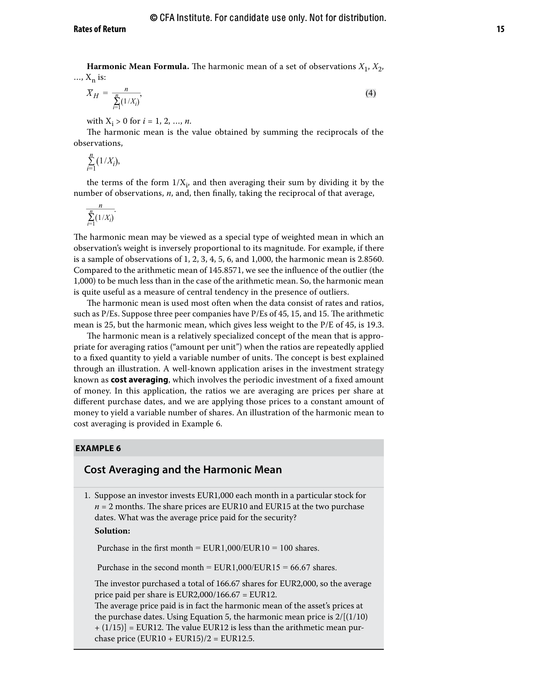
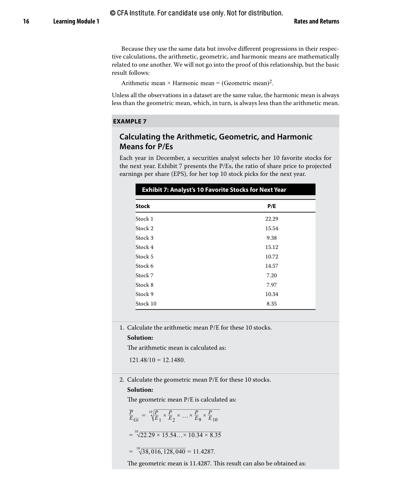
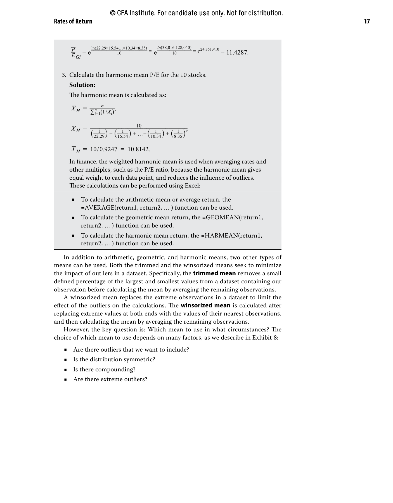
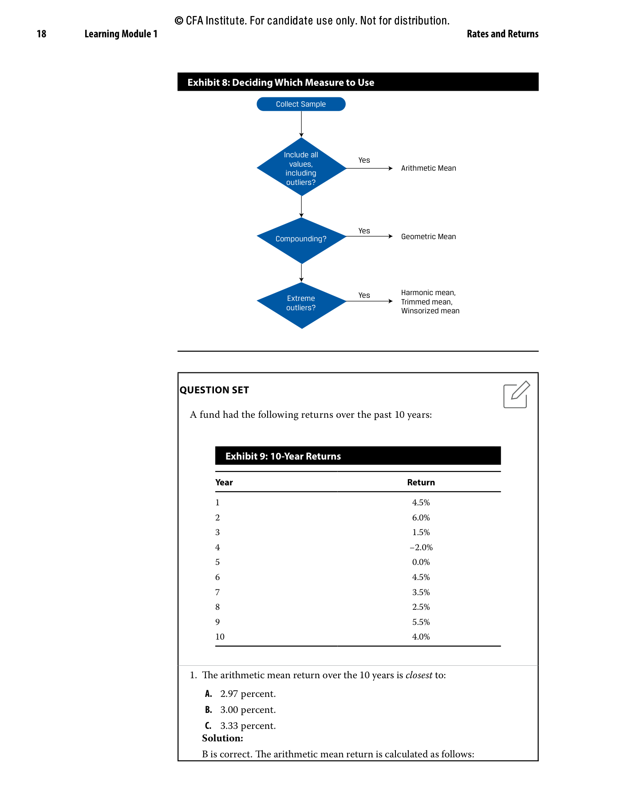

CFA Reading Session 01 / Original PDF Pages
Original PDF Figures
Queste sono le pagine originali del PDF usate nel flusso del teleprompter. Le figure principali restano cliccabili anche dentro lo script.

Original PDF page 19 - Example 1 and Exhibit 1.

Original PDF page 22 - Exhibit 2.

Original PDF page 23 - Example 2, Example 3, and Exhibit 3.

Original PDF page 24 - Example 4, Exhibit 4, and beginning of Exhibit 5.

Original PDF page 25 - continuation of Exhibit 5 and calculations.

Original PDF page 26 - Exhibit 6.

Original PDF page 27 - Example 6.

Original PDF page 28 - Example 7 and Exhibit 7.

Original PDF page 29 - Example 7 calculations and Exhibit 8 setup.

Original PDF page 30 - Exhibit 8 and Exhibit 9 question set.